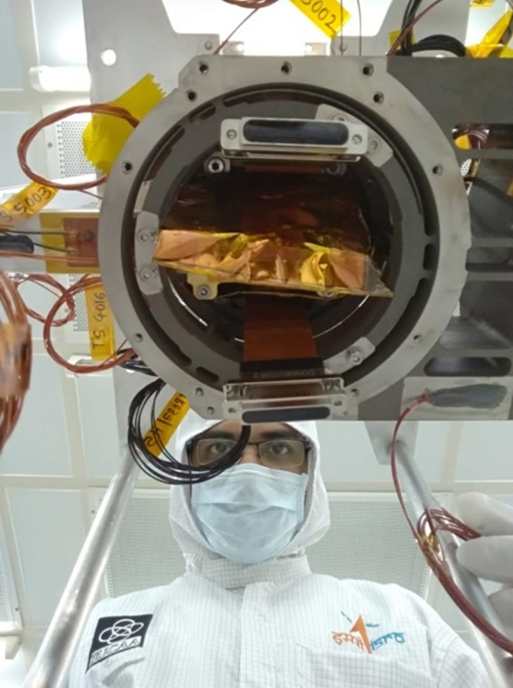

I am an electronics engineer and Scientific Officer with over a decade of experience in developing advanced instrumentation for astronomy.
My work focuses on the design and implementation of detector systems, FPGA-based readout electronics, and embedded architectures for high-performance imaging applications. I specialize in translating scientific requirements into fully functional hardware systems — from concept and design to integration and deployment.
I am currently pursuing a PhD at Stellenbosch University, working on high-cadence sCMOS imaging systems for time-domain astronomy, with an emphasis on real-time data acquisition and processing.
My experience includes contributions to observatory-class instruments and space missions, where I have been directly involved in detector integration, electronics design, system testing, and on-site deployment.
